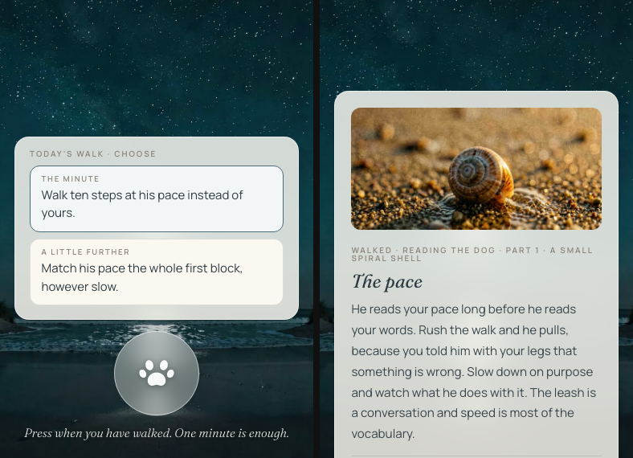

The Build Log
Nicola Harvey
A dated record of what I build and how I prove it worked.
Every entry here was working before it was written up. Each one names the build, the assurance check, the proof, and the limit. Dates are the dates things ran; nothing here is a plan or roadmap.
27 August 2026
An adversarial test that assumes the model was fooled
test_injection.py feeds an agent a deliberately hostile feed and checks that nothing harmful can leave. Server instructions are stripped, hidden characters removed, invented post ids dropped, and an outbound firewall refuses anything sensitive.
The claim it tests is not that the model resists injection. Small models often do not. It tests that the deterministic layers around the model make a fooled one harmless. That is the only claim that holds when the model is the part you cannot audit.
Limit: it proves the layers hold against the hostile inputs it carries. A payload shaped unlike any of them is untested.
Proof: twelve hostile scenarios, run without the model at all, then again against the real model call.
27 August 2026
A site builder where the owner's approval is a database rule
promote_section refuses a write to Master from anyone but the project owner, and a publish takes its author from the caller, refusing an insert that names anyone else.
Testing the gate with a real contributor account found nobody could write to Master, the owner included. copies.owner is NULL on the Master row, so the ownership comparison returned NULL rather than false, and the guard beneath it read that as not a member. Master had been unwritable for three days.
Proof: a Master write from a non-owner is refused by the database, and every publish carries the caller's own identity.
27 August 2026
An approve step that carries the styling and the deletions too
Approving a section carries its styling and its deletions. The contributor's CSS rules travel under a marker keyed by page and sync id, so approving the same section again replaces its rules instead of stacking another copy.
Approving a whole page now removes what the contributor removed, rather than leaving a deleted section on Master to publish. Both fixes sit in the database rather than the app, because the app is one client and the database is the rule.
Proof: an approved section arrives on Master with its styling intact and its removals applied.
25 August 2026
A scheduled queue check that catches a year written as words
check-spelled-years.mjs reads my publishing queue twice a day and files an alert. Seven patterns cover century years, the 2000s, spoken twenty-twenties, round centuries and the long form, so "in seventeen hundred" and "nineteen hundred and six" both land.
A count and a year are the same words. "Seventeen hundred people" is correct and "in seventeen hundred" is a year, so the grammar around the number decides, not the number. Every pattern is written to stay silent where a count would sit.
Limit: it reads queued posts. Anything typed straight into a platform bypasses it.
Limit: eleven and twelve are left out as century heads, because "twelve thirty" is a time. Years in the 1100s and 1200s are not caught.
Proof: the scheduled run logs "Scanned 170 posts (queued only). No years spelled as words."
25 August 2026
Four rounds of a grader attacking my own tool
A grader that never saw the build attacked it and prescribed the fixes. Round three named the pattern behind three rounds of the same bug. Each rule was written from a property of legitimate text, then trusted to exclude everything else.
One rule assumed every base taking a presentation selector is non-ASCII. True, and the converse of what the code needed. It exempted 1.1 million code points, and a payload hid in ordinary text with smart quotes.
Limit: three grading passes is the cap, then a human looks.
Limit: the grader prescribes only from what it can demonstrate, so a channel it never tried stays open.
Proof: 213 tests, and every change in the last round is the grader's own prescription rather than mine.
24 August 2026
My worlds tell you how to begin
Every world arrives as one unlit point waiting for a touch. It lights that point, says so, and begins on its own after twelve seconds.
It had been running at sixty frames a second the whole time, and reading as frozen. The fix threw 2500 caught errors a run, hidden by the loop's safety net, while all three of my checks passed. The probes assert a clean log now.
Limit: the probes read the log and the screen. They cannot tell whether a world is worth staying in.
Proof: both dives say the line, the point lights on both, it begins at twelve seconds, no errors.
23 August 2026
A sign-in check that reads positive evidence, proved in both directions
check-bridge-logins.mjs opens a fresh tab on each automation window and looks for evidence the session is live. It reads a signed-in signal rather than the absence of a signed-out one.
I pointed it at a clean browser with no session and required it to report LOGGED OUT. An absent warning proves nothing on its own, so the check only counts positive evidence.
Limit: it proves a session exists. It cannot prove the account behind it is the right one.
Proof: a clean no-session browser still reads LOGGED OUT while all nine real windows read logged in.
23 August 2026
A publishing scheduler that sleeps until the next post is due
x-post-scheduler.mjs reads when the next post falls due and sleeps to that minute. lane-watchdog.mjs covers the process itself and restarts a wedged one.
Polling on a fixed interval buys accuracy with wasted work. Sleeping to the due time took the X lane from 144 wakeups a day to one per due post, trading a poll loop for a long-lived process. The watchdog covers that trade.
Limit: it schedules the X lane. Other channels keep their own timing.
Proof: the log reads "next look in 240 min (next post at 22:00Z)."
23 August 2026
A reply worker that confirms a send by counting, not by looking
tiktok-comment-worker.mjs counts the replies under a comment before and after it posts, so a send is confirmed by a number that moved. It refuses any reply over 150 characters at approval, because the platform truncates those in silence and still reports success.
A presence check cannot verify a send on a comment that already has replies. Counting holds whatever state the target was already in. The worker confirms every action it takes that way.
Limit: it confirms the reply appeared. It does not confirm the text survived.
Proof: the reply is live under the comment and the queue is empty.
23 August 2026
A reply engine that reads the video, not just the caption
Videos carry a transcript into tiktok-comment-worker.mjs, and it reaches the model before the caption. A figure in a comment counts as substance, so the reply takes the full branch instead of the short one.
A comment answers the video. An engine reading only the caption answers a different question and sounds certain doing it. The persona is held to asserting no competing number.
Limit: the transcript carries the spoken line. A figure shown on screen and never said is not read.
Proof: the stored transcript reads "He has tens of times the scent receptors you do."
23 August 2026
A comment reader for a channel whose API returns nothing
tiktok-comment-worker.mjs reads comments through a browser already signed in, capturing the JSON the page requests rather than scraping the markup. It types back replies I approve, matching each on the commenter's name and exact words.
Capturing the request gives the same data the platform gives its own front end, which survives a redesign that breaks a scraper. The page exposes no comment id. Matching on name and exact words is what lands a reply on the right thread.
Limit: it reads top-level comments. Nested replies are not read.
Limit: it works only while that browser window is open.
Proof: ~/Library/Logs/tiktok-comments.log, five comments filed on the first run and none on the second.
23 August 2026
An X poster that asks the desk what is due before it opens a browser
x-post-worker.mjs queries the desk first, so on a quiet day the browser window is never opened. The identity check still runs before anything is typed.
An identity check costs a page load. Running it before the cheap question means paying that cost to prove something the run then uses for nothing. All four browser lanes now ask what is due first.
Limit: it answers for the X lane. Each browser lane holds its own schedule.
Proof: the log now reads "nothing due for X, so the window was left alone."
23 August 2026
A build loop that writes, drives and looks at ten prototypes
Ten premises in, ten playable files out from one run. All ten parse and nine boot clean. A local coder model writes each one, a headless browser drives it, and a local vision model reads the screenshot.
The vision pass judges what the code cannot assert. It disagreed with all ten builds on the same point, and it caught five that ignore their own keys.
Limit: the loop cannot tell whether any of them are fun.
Proof: one report page carrying twenty screenshots, three per prototype for the ones that booted.
23 August 2026
A game forge where an unmarked rule is an unmade decision
The game-forge skill holds a spine of rules every build obeys. A style pack per genre marks each rule applies, inverts, adapts or not applicable, and gives a reason. One safety rule forbade a whole genre. That pack inverts it and says why.
Forcing a mark on every rule is what stops a genre skipping one. verify-ambient-toy.mjs is the runnable instrument for that style, gating responsiveness, aliveness and a performance soak. Its first run found one toy at 12fps and another throwing a 404.
Limit: none of the instruments can tell whether a game is fun.
Proof: a 35-phrase sweep against the old version found one lost rule and I restored it, and every cross-reference across nineteen files resolves.
23 August 2026
An App Store client that signs its own Apple token
asc.py mints a short-lived App Store Connect JWT from my own key and carries four commands: doctor, state, builds and upload. upload_shots.py pushed sixteen screenshots, and Apple validated all sixteen and reported their dimensions back.
Signing the token locally keeps the key on my machine and out of any third-party dashboard. What's New is rejected on a first release, and the privacy label is not on the public API at all.
Limit: it moves builds and screenshots. Listing text, categories, price and age rating are not on the path it drives.
Proof: fluidfrontier.app
23 August 2026
One share file that gives fifty-one toy pages a matching button
share.js carries the button across all fifty-one pages of the playground, and add-share.mjs installs it. On a toy it reads the computed style of that toy's own corner pill, so every palette matches with nothing written per toy.
It places itself by measuring. It scores candidate slots along the pill's own row against every visible control. It slides sideways, then nudges within the row, and takes the first slot that collides with nothing.
Limit: it measures the DOM, so a control a toy paints inside its canvas is invisible to it.
Proof: muplu.com/scurry
23 August 2026
An X poster that drives my own browser and proves the post landed
x-post-worker.mjs drives my logged-in Chrome, because the X API answers payment required on every write. It checks the handle and reads the composer back against the approved text. It carries up to four images and posts the first comment. It finds the post on my profile before marking it done.
A browser lane can report success at four points where nothing was sent. Reading the composer back, then finding the post on the public profile, are the two checks that close them.
Limit: it never composes.
Limit: images only, so a video attachment is dropped and logged rather than sent.
Proof: the post it sent
22 August 2026
A model-size bench that cut a note job from three minutes to fifty seconds
I ran sync.py's real prompt against two model sizes rather than a synthetic one. The large model took 145 seconds and 1480 tokens to produce 228 characters. A model a third of the size took 33 seconds and 101 tokens to produce 430. The job now finishes in 50 seconds.
The large model was a reasoning model, so it deliberated before writing bullets. Benching the job's own prompt is what surfaces that; a generic benchmark would have shown the bigger model ahead.
Limit: one prompt shape on one machine, measured for speed and length rather than quality.
Proof: 145.3s against 33.0s on the same prompt, and a live run finishing in 50 seconds.
22 August 2026
A scheduler rule that mirrors a post to a second board on its own
The rule runs on the scheduler tick and picks the destination board by matching the post text against my content pillars. It skips posts with no image and posts I label to opt out. I backfilled twenty already-published posts the same way.
On an account holding drafts, the publish button moves out of the header into the drafts sidebar as a bulk action. The poster ticks only the draft it made, so a bulk control cannot publish anything it did not create.
Limit: text-only posts are not mirrored.
Limit: video takes a slower path than a still.
Proof: a throwaway post gained its second target, on the right board, twelve seconds after I created it.
22 August 2026
A Pinterest worker that reads which account the window is holding
pinterest-post-worker.mjs reads the signed-in handle from the page's own bootstrap state before it creates anything, and refuses on a mismatch or an unreadable answer. I added it while splitting the lane across a second brand's account.
A resource endpoint answers 403 against a live signed-in window, so the page's bootstrap state is the readable source. A browser lane driving two brands has no other way to know whose account it is about to post to.
Limit: it never writes a description, picks a board or chooses a moment.
Limit: it reads the handle the page reports, not whether that account should be posting.
Proof: the shipped function lifted from the file and run against a live window, returning the right handle.
22 August 2026
A quiz that refuses to give a reading the answers cannot support
Four statistics run over a personality instrument's raw answers and can withhold the result, saying which pattern in the answering stopped it. Agreeing with every line now returns a withheld result rather than a confident named type.
Every threshold sits outside the 99th percentile of 15,000 simulated honest respondents. Setting the cut from a simulated distribution is what lets a cautious answerer through while a careless one is caught.
Limit: the honest respondents are simulated, not sampled.
Limit: the checks change no score.
Proof: 233 tests passing, and both cases side by side in the browser.
22 August 2026
Separate address fields for billing mail and content mail
Receipts and content each have their own field and their own form, so changing one cannot move the other.
One address per person assumes the payer and the reader are the same inbox. Two subscribers pay from one address and read their alerts at another, which sends every sign-in email somewhere neither of them opens.
Limit: with no preference set, billing copies both addresses.
Proof: each account resolving to a different address per message type.
22 August 2026
A mailing list that reports its own drift every day
Every failure path logs who it dropped, and a daily check reads both sides and writes the difference into the run record.
Adding a signup to a campaign audience is best effort, so a failure is possible by design and silent by default. A daily count of both sides is what turns a silent drop into a number someone can see.
Limit: it reports drift. It does not repair it.
Proof: the audit returning one in each, in sync, against live data.
22 August 2026
A calendar that will not show a vendor's date until a human ticks it
A fetched earnings date is written unconfirmed and a row-level rule keeps it out of every member read until someone confirms it. Published central bank dates are seeded and shown straight away.
The gate sits on the row, not on the page. A query written later that never heard of the rule still cannot return an unconfirmed date.
Limit: two vendors publish no schedule this machine can reach.
Proof: the member page shows the confirmed dates and none of the unconfirmed ones.
22 August 2026
A Friday job that assembles the week into a draft note
The research-draft cron reads what was published, what closed with real numbers and what is still open, then writes them into the standard note. The author adds the judgement.
An empty form is the reason a weekly note gets skipped. Assembling the facts from production data leaves only the part a person has to write.
Proof: the draft built from production data, wins and losses in the same list.
22 August 2026
A dispatch tool that fans work to background scouts on both assistants
It runs with the worker pinned to one chosen provider, so I know where background task text goes. A substantive prompt plans eight read-only lanes. Trivial prompts get none, by design.
Work sent to a lane is still my text, and an unpinned worker chooses where it lands. Switching it on also explained the tool's own failing tests: 36 fell to 19 once the flags were set.
Limit: one machine.
Proof: the route plan naming eight lanes, and the two test counts. Built on myos-dispatch.
22 August 2026
One command that re-trusts hooks my second assistant silently drops
codex-retrust asks the tool itself for each hook's current hash over its own config API and writes trust back. A --check run reports status and changes nothing.
The tool disables an edited hook until its stored hash is renewed, and shows no error when it does. Proven by breaking it first: 15 logged routes, one harmless edit, still 15. After the script, 16.
Limit: one machine. The hash algorithm is internal, so the script reads it, never computes it.
Proof: the route counts across the break and the fix.
22 August 2026
One routing layer that briefs both of my terminal assistants
The same dispatch hook that routes my first assistant fires in my second, with seven tool servers and 21 skills carried across as links.
Carrying them as links rather than copies means one edit reaches both surfaces. Trust is a hash written through the tool's own config API, so a configured server is not a reachable one until that is set.
Limit: one machine.
Proof: the route log naming both surfaces, and the doctor check listing seven servers. Built on myos-dispatch.
22 August 2026
One standing brief under two names, so both assistants read the same file
A symlink gives the brief the name each tool looks for, so both open the same bytes. Asked in an empty folder where my notes live, it answered from the brief in 1,357 tokens.
The private lines came out of the shared file first and live on in the file only one tool reads. A brief that two tools share cannot hold anything only one of them should see.
Limit: one machine, two tools.
Limit: an installer writing to the linked name would follow the link.
Proof: both names, identical checksum, and the two answers.
22 August 2026
A rewrite scorer that turns 191 passages into 46 decisions
build-doc.mjs scores each rewritten passage by the share of words that moved, then builds a review page opening on the ones that changed most. Of 191 passages an automated pass produced, 143 scored as light edits and 46 as real rewrites.
A reviewer reading 191 passages in order gives the same attention to a comma as to a rewritten paragraph. Ranking by words moved puts the decisions first. Counting the deletions separately showed the light edits were striking my own filler list.
Limit: word overlap measures text moved, not meaning. A two-word change that flips the sense sits in the bulk group.
Proof: the review page, opening on the 46 with changed words marked in both versions.
22 August 2026
Comment editing on our review tool, with the rail frozen while you type
The review Worker had always allowed a teammate to edit her own comment; the page had no button for it. I wired one, and froze the comment rail while someone is typing.
The rail rebuilds every five seconds. A live-refreshing list will eat an in-progress edit, so any surface that polls has to stop polling while a field is open.
Limit: it edits a comment's text. It cannot recover what the comment said before.
Proof: live, with the same comment count before and after the deploy.
22 August 2026
Automation windows that come back signed in after a restart
Eight browser windows drive the channels with no usable API. A launchd job reopens any that are down, at login and every 45 minutes. It reads a signed-in signal off each page, so a session is confirmed rather than assumed.
I proved it by killing a window outright. It came back logged in, with no prompt. A recovery path nobody has triggered on purpose is a guess.
Limit: a site redesign can break the signal it reads.
Proof: the launchd log listing sign-in state for every window.
22 August 2026
A scheduler that presses Post in my own browser and checks the profile
The browser lane runs from the scheduler. It finds a due pack, drives my logged-in window, and marks the desk done only once the post shows on the public profile. One went out on its own, unattended.
Two of my channels have no publishing API I can use. Driving the browser is the only path, and the public profile is the only honest confirmation that the press worked.
Limit: the browser window has to be open for a lane to run.
Proof: the post the scheduler sent, live on my public profile.
22 August 2026
A member area that paints while its data loads
A loading boundary on the member routes streams a skeleton while the data resolves. Three warm runs on the live site measure 2.4 seconds against 8.8 before.
Streaming a skeleton puts the wait behind something a person can read, and the route answers on the first byte rather than the last.
Limit: the skeleton covers the warm route. A cold start still waits 34 seconds.
Proof: both button states and the skeleton, driven on the live site.
21 August 2026
A dispatch tool routing work to a model on my own machine
I added a local provider to the dispatch tool I run. A call routed by task class, naming no model, came back correct in 37 seconds on a 30B model on my laptop.
Routing by task class rather than by model name is what lets a local provider take work without every caller being changed. The call names what the job is, and the router decides where it goes.
Limit: one machine.
Limit: a tool upgrade reverts two of the four edited files.
Limit: the local provider reports no token usage.
Proof: the routed call returning MYOS LOCAL PROVIDER OK with no model named in the request. Built on myos-dispatch.
21 August 2026
An operator digest that shares nothing with the outreach layer
The overnight worker runs saved searches, dedupes, enriches and pushes results to a CRM, then emails the account owner what changed. It carries its own signed token and its own opt-out, sharing nothing with outreach but the transport.
An operator's own address must never land on the list that decides who can be emailed as a prospect. Running an account email through the lawful-basis floor and the suppression list would be a category error. It touches neither.
Limit: it reports change against a stored baseline, so a first run has no news to report.
Proof: 32 checks, including a first run that reports no news because it has no baseline to compare against.
21 August 2026
A host move that kept 1,544 URLs and every mail record
I rebuilt the DNS zone through the API, moved the nameservers, then repointed the site to a new stack, checking the mail records after every change. verify-legacy-redirects.mjs drives every branch of the redirect resolver and fetches each destination live.
The command line tool created two settings empty and reported success. Reading every setting back beats trusting an exit code, and it caught them before deploy.
Limit: it proves every rule resolves and every destination is alive. Whether a given old URL went to the most topical page was a judgement made when the rule was written.
Proof: old member bookmarks 301 into the new member area, mail records unchanged.
21 August 2026
A routing check that calls the route instead of reading the config
It resolves eight task classes across three auth lanes, validates each candidate the way the executor would, then calls it for real.
Validation alone passed everything. Executing found that only one of three providers can authenticate, and that a route configured minutes earlier dies on a script the tool never included. A config a machine agrees with is not a route that answers.
Limit: it tests routing and auth, never answer quality.
Proof: the resolve, validate and execute pass across 22 lanes.
21 August 2026
A converter that turns a still into a vertical video
still-to-reel.mjs applies a slow push and a music bed, matched to my own best performer. I converted 31 scheduled posts, and the first two published at 23 and 124 views.
I grouped 108 of my AI influencer's published posts by source media before building anything. Images ran a median of 6 views and never passed 11 in 28 attempts. Video ran a median of 64 and held every spike.
Limit: one account.
Limit: the converter makes a still move. It cannot make a weak still worth watching.
Proof: the before and after view counts on the first two converted posts.
21 August 2026
A sandboxed test that proves its own instrument before it trusts a tool
I read the checkpointing tool's source first: no external dependencies, no network path, no scheduler, and every destructive command behind a full typed confirmation phrase. Then I tested it in a container against four decoy repositories.
I ran a deliberately destructive fake version first, to prove the comparison would catch damage. It did, with four failures, one per decoy. The real tool then produced no working-tree changes.
Limit: it runs in a container against four small decoy repositories, not on the machine it is meant to protect.
Proof: before/after comparisons showing four failures on the fake and none on the real tool.
21 August 2026
A backup test that asks the host what it holds
Four conditions, all read from the host rather than from local push output. The repository is private when it should be private. The remote branch matches the local branch. Nothing sits unpushed. The files I care about are present on the host.
Asking the host found a finished iPhone app carrying one starter-template commit, with nearly eight thousand lines of screens untracked.
Limit: a private repository cannot be shown as public proof.
Proof: GitHub's own report: private repo, matching branch, no unpushed commits, and the app screens listed remotely.
21 August 2026
My Android build check opens the package and reads what is inside
It goes past "build succeeded" to the artefact itself. On an Android build it confirmed the debug APK existed and the game bundle was byte-identical inside it. It then measured the launcher icon at 9,441 bytes against a source icon of 544,839 bytes. Capacitor had generated placeholder art.
I regenerated the icon and splash from the game's own visual system, so they cannot drift from the product. The rebuilt APK moved from 4.0MB to 6.7MB with the real branded assets present.
Limit: it inspects the package, never a played session on an Android phone.
Proof: Android debug APK built and inspected; the game files inside matched the source, and the placeholder launcher art was replaced with regenerated branded assets.
21 August 2026
A page test that clicks a control and asserts the page answered
It drives each page and requires a user action to change state. It caught four pages that returned 200, passed type checks and lint, and rendered correctly in screenshots while their JavaScript was dead.
The site was served on one local hostname and opened on its twin, so the framework refused the scripts to that origin. A static page still paints without them. Only a click reaches that failure.
Limit: the origin fault is dev-mode only, and production builds do not carry that behaviour.
Proof: dev-server log naming the disallowed origin, plus before/after browser-walk transcripts.
21 August 2026
A strategy audit that checks every claim against my own disk
Eleven agents took a list of ten product concepts. Five checked each claim against my repositories. Two drafted rival strategies. One merged the strongest. Three attacked the result for weak assumptions, already-built work and missing proof.
Treating the machine as the source of truth is what a brainstorm cannot do. It found three of the ten already built locally and unpublished, in eighteen minutes.
Limit: the reviewers use the same family of models as the builders.
Limit: the output is current strategy, so the forty findings stay private.
Proof: forty findings held privately because the output contains current strategy.
21 August 2026
A parser that reads six years of one person's changing habits
match-reports.py pulls write-ups out of weekly research documents. It recognises the four different ways one person wrote the same line over six years. It uses the archive's weekday pattern to resolve ambiguous dates where that is safe.
I moved its verification from a sample page to all 695 pages. Coverage went from 86% to 95%, and 21 pages that had parsed as empty now read.
Limit: matching is exact, never fuzzy. A block whose wording drifted past the known variants stays unattached.
Limit: the weekday rule is specific to this archive and is not a general date parser.
Proof: before/after diff over all 695 pages, re-run from the committed script.
21 August 2026
A verification battery whose checks were locked before the code existed
verify-pulsemerge.mjs runs against the minified build, never the source. Its header records that the checks were quoted from the concept sheet before a line of the game was written. The builder may fix the game and never the gates.
Checks written after the code tend to describe what the code does. Locking them to the sheet first is what let this battery gate a build that had passed 31 of its own.
Limit: the gates are mechanical, so none of them can tell whether a human enjoys the result.
Proof: the live build at muplu.com/pulsemerge, with 53 checks against the live site.
20 August 2026
My archive check tests a site as if its host were already gone
It verified 1,561 pages of a twenty-year-old site being retired, with the original host treated as already dead.
That caught lazy-loaded images saving as blanks and internal links still pointing at the old host. It also caught a filename-shortening rule that stripped the extension from the main stylesheet. That one bug would have left 673 pages rendering bare once the source disappeared.
Limit: it verifies structure and links, never whether a page still reads correctly.
Proof: 35,218 internal links resolve locally and nothing points back to the old host.
20 August 2026
A daily app with no punishment loop
An installable web app with a service worker, so it opens from the home screen and works offline. One minute a day: you walk, press a paw into the sand, and one short lesson washes up. It keeps a thirty-day shelf of finds, and seven lessons are in a cloned voice.
The mechanics carry the same decision as the content. No streak to lose, no scolding for a missed day, no declining count.
Limit: it keeps a thirty-day shelf. A find older than that is gone.

Proof: live app screen over the night beach, with today's practice and saved lesson card.
20 August 2026
A ledger check that reads commit history and names what went unwritten
It compares commits across project folders against the dates already on this page, then reports work days with commits and no entry. It reports separately when the ledger is dirty or unpushed. A waiver list covers work I decided not to write up.
It reads two factual sources: the commits, and the dates on the page. Neither can be argued with.
Limit: it only sees work that touched a tracked folder.
Proof: this page, plus the checker in ~/.claude/hooks/build-log-check.py.
19 August 2026
A publishing bridge that checks the public feed before reporting success
medium-bridge.mjs stages a complete story over the Chrome DevTools Protocol in one command: title, cover image, formatted body and draft state. It runs a dedicated browser profile, screenshots each step and never handles credentials.
The platform retired its publishing API, so a browser lane is the only path. A click is not a post, so it checks the public feed before reporting success. An unsigned-in profile stops it and asks for a human login.
Limit: it drives the platform browser UI, so a redesign of that UI breaks it.
Proof: the first essay it staged and the bridge code in my publishing desk.
18 August 2026
A nightly reader that turns my own messages into one page
It reports what came in and what is still waiting on me. Voice notes are transcribed locally and no conversation leaves the machine. The first unattended run captured 33 messages.
macOS grants file access to the application, not the script. A scheduled job is blocked, a grant given to a shell script is ignored, and a compiled launcher run directly hangs without an error. Starting the app with open is the path that carries the grant.
Limit: one Mac.
Limit: what is waiting on me is computed, not summarised.
Proof: the workshop, with the code I run, at workshops.herfrontier.com/whatsapp-reader
18 August 2026
A provenance checker that separates three layers people collapse
Invisible text characters, image metadata, and marks in the pixels are three different problems. The checker reports them separately rather than as one score.
Pointed at my own website it found four published images carrying the full generation recipe in their metadata. Prompts, model and settings, none of it visible on the page. I cleaned and redeployed the same night.
Limit: stripping metadata does not remove visible watermarks or pixel-level generator marks.
Proof: the write-up The 48 characters I could not see.
18 August 2026
An open-source tool that checks what goes out under your name
It runs locally. It finds invisible Unicode carriers in text and generation metadata in images, then removes only the parts it can prove are safe to remove.
The exemptions carry the work. It leaves emoji joiners intact. It preserves joiners that are spelling in Persian, Arabic, Hindi and related scripts. It keeps leading byte-order marks doing an encoding job. It refuses verbatim archives and evidence folders. The command line and browser page share one tested core.
Limit: it does not rewrite words, change pixels, or claim to defeat AI detectors.
Limit: image metadata checks depend on local tooling.
Limit: visible and pixel-level marks are out of scope.
Proof: github.com/nicolakharvey/clearing under MIT, with 54 zero-dependency tests.
13 August 2026
A continuity checker where every new check must match the last
manuscript_qa.py runs the mechanical half of a copy editor's style sheet across a manuscript: hard assertions, phrase-anchored eye and hair checks, timeline-aware ages. It runs on every assemble and never passes silently.
Its module docstring carries the tuning history, from five false positives and no real findings down to none of either. That history is the standard every check added since has to meet, so a noisy check cannot join the suite unnoticed.
Limit: it checks what a style sheet can state, never whether a scene works.
Proof: the QA runs on every assemble, and the tuning history sits in the module docstring where the next check has to match it.
11 August 2026
A scanner that reads every frame of a recording for private text
check-recording.py reads the text in every frame of a screen recording and reports any of your listed private terms. It runs before a demo goes to a platform review, a client, or anyone else.
A recording made inside a tool holding several brands will contain the others. A sidebar footer, a list you scrolled past, a dropdown open for a second. Two careful visual passes on the first recording both said clean. The scanner found 22 exposed frames.
Limit: it finds the terms you listed. A private thing you did not name is not looked for.
Proof: 22 exposed frames on a recording two human passes had cleared.
6 August 2026
A game whose verification checklist was locked before the build
The checks were written and committed first, then the game was built to pass them, then it went to production. Fourteen end-to-end checks, all passing.
Writing the checklist first is what stops it describing whatever the code happened to do. The order is the whole method: a check authored after the build is a description, not a gate.
Limit: fourteen checks cover the flows I could name in advance.
Proof: the checklist committed before the first build commit, and 14 of 14 end-to-end checks passing on the deployed site.
4 August 2026
A cloud publisher with one writer per post
A Cloudflare Worker holds only due all-auto posts inside a short horizon and publishes them at the right time. Manual and reminder posts stay local because they need a person.
The Mac claims or withdraws a delegated job by version, and while the cloud claim stands the Mac will not publish that post. Any edit breaks the claim, and "publish now" cancels the worker's copy first. A late worker makes the app warn rather than race it.
Limit: a delegated job places encrypted platform tokens and media copies inside my Cloudflare account for as long as it runs.
Proof: scheduled posts publish on time whether the Mac is awake or asleep.
4 August 2026
Licensing a build to a client without handing over the asset
A publish script builds, then mirrors only the packaged output into a separate private distribution repository on my own account, and pushes. The licensee gets upgrades without an email and can point their own agent at the desk.
The source history holds my brands, my handles and every credential decision I have made, so it can never be shared. Keeping the distribution repo under my account licenses a copy. Handing over the repository would hand over the asset.
Limit: what the licensee then runs on their own machine is beyond its reach.
Proof: a private distribution repo holding only cleaned package output, and an operating brief shipped beside it.
4 August 2026
A mirror that removes what it stopped shipping
The push mirrors with delete, so an extension pulled from the package is pulled from the licensee's machine on their next upgrade. It also switches the publishing account for the push and puts the previous one back.
A mirror that only adds leaves withdrawn code running on someone else's machine forever. The credential helper follows whichever account is signed in, so the switch is what keeps a push under the right identity.
Limit: the delete reaches the distribution repository. A copy the licensee has already taken out of it is beyond its reach.
Proof: the publish script restores the previous account after the push, and the distribution repo matches the staged output.
1 August 2026
A repetition instrument with a ceiling the writer cannot move
qa.mjs counts repeated four-word runs across a manuscript and flags phrasing borrowed between characters. The ceiling is eight. A 25-chapter, 68,032-word book came in at or under it everywhere except one compliance date phrase at nine, kept on a stated allowance.
A writer cannot hear their own repetitions after the fourth pass. Counting them puts a number on a thing taste stops noticing, and a written exception is the only honest way past the gate.
Limit: it counts repetition. It cannot tell whether a repeated phrase is doing deliberate work.
Proof: five batched passes, 44 rewords, and every repeated four-gram at or under the ceiling bar the one filed exception.
29 July 2026
A gate that keeps a research assistant paused until it stops inventing
check-assistant-fabrication.mjs asks the assistant questions whose answers are already known from the row, then checks every reply for claims nobody supplied. The assistant stays switched off until it runs clean and a human has read real answers on real alerts.
Guardrails stopped the model advising and nothing stopped it embellishing. It answered an expiry question correctly, then added a reason for the date that was invented outright.
Limit: it tests questions whose answers it holds. A fabrication about anything outside the row would pass.
Proof: the assistant is paused, and the gate names each invented claim beside the row that contradicts it.
29 July 2026
A freshness check so a dead price feed cannot render as a live price
quote-freshness.js answers one question for every surface that shows a tracked price: is this stored quote still worth showing? When the answer is stale, the surface says the quote is unavailable and shows when the last one arrived.
The quote source can stop answering without warning. The last mark then sits in the table and every member page keeps rendering it as current. That is a silent failure, and it puts a false number in front of someone paying for it.
Limit: it judges the age of a quote, never whether the source was wrong when it answered.
Proof: every surface that renders a mark calls the module first, and a stale mark renders as unavailable with its timestamp.
26 July 2026
Site checks moved into the repo so they survive the session
check-site.mjs, check-dns.mjs and check-email-matches-site.mjs live in the repository and run from it. A browser walk sits beside them.
A check that exists only in the session that wrote it runs once. Committing it makes the next person able to run it. It also makes a failing check something a reader can reproduce rather than take on trust.
Limit: they check this site's own surfaces, not the platforms it publishes to.
Proof: the checks run from the repository on a clean clone.
20 July 2026
A backup that refuses to call a corrupt backup a backup
kv-backup.py copies every user, lead, setting and suppression entry out of a single key-value namespace to a timestamped folder. It verifies what it wrote before reporting success.
It runs on the operator's own credentials rather than as an in-app route. An export-everything endpoint would be one URL that dumps every tenant's data. A script exposes nothing over HTTP.
Limit: it backs up the namespace. Restoring is a separate deliberate step.
Proof: a timestamped folder holding the namespace, with a verification pass that fails rather than reports success on a short read.
20 July 2026
Token rotation that checks which scopes were granted
The rotation script verifies the new token before it writes it, and refuses when a required scope is missing. A separate checker reads back the scopes the platform issued.
A platform can grant a subset of what you asked for and return success. A token that looks valid then fails on one call in ten. The check reads what was granted, not what was requested.
Limit: it reads the scopes the platform reports, so a granted but unenforced scope still reads as present.
Proof: the rotation refuses on a missing scope, and the checker lists the granted set beside the requested one.
18 July 2026
Brand-scoped logins enforced on the server, not in the interface
Teammates sign in over my domains, see only the brands they work on, and publish from the same calendar. The application and its data stay on my machine.
Member sessions carry explicit brand IDs, and server routes filter brands, accounts, posts, inbox, analytics, insights and activity before returning data. Hiding a button changes what a person sees. Filtering on the route changes what exists.
Limit: it is built for a small working team, not as a general multi-tenant SaaS platform.
Proof: in daily use by a working team across two ventures.
10 July 2026
A compliance evidence pack that can be filed, not just claimed
The lead engine produces an artifact a regulator or a client can read. It records the basis held for each contact, where the data came from, and what was sent when. Enrichment is gated on that basis rather than run first and justified after.
Most tools in this category enrich everything they can reach and leave the compliance question to the operator. Gating the enrichment means the evidence exists because the system could not have run without it.
Limit: the pack records what the system did, never data entered before the system held it.
Proof: the evidence pack renders per campaign, with provenance on every field it carries.
10 July 2026
An independent grader on my own work before it merged
Five build stages went to a grader that had not built them, and all came back confirmed before the merge. The grade sits in the project ledger beside the work it covers.
A builder grading their own work marks against what they meant. A grader given only the finished thing marks against what is there. That is the reading a user gets.
Limit: the grader reads the built result, so a requirement nobody wrote down cannot be found missing.
Proof: the recorded grade of stages P0.1 to P0.3, all confirmed, dated before the merge commit.
8 July 2026
A compliance posture applied across three live products in a day
Education-only framing across one product. A cycle projection reframed as history rather than a forecast on another. Publisher posture enforced on every surface of a third. The owning entity and its address now appear in the emails.
A forecast and a history of the same numbers look identical on the page. They are not the same claim, and which one you are making decides what licence the work needs.
Limit: it fixes what the surfaces say, never what a reader infers from a chart.
Proof: the framing pass ran across every public surface of all three, with the owning entity named in outgoing mail.
7 July 2026
A native app that draws a model's own uncertainty as a constellation
It captures token probabilities as they stream and projects them down to three dimensions. The result is a navigable constellation, with fork branches where the model nearly chose otherwise. Built native, with a zoom and pan camera.
Long answers crashed it. The geometry was being serialised per frame rather than held in buffers on the graphics device. That is the difference between a demo and something you can steer.
Limit: it shows where the model was uncertain, never why.
Proof: the app runs on device with long answers, verified against a live streaming capture.
6 July 2026
A lawful-basis floor the outreach path cannot be talked past
The send path enforces two tiers of lawful basis on the server, so a weak basis cannot be upgraded by anything a caller passes in. Unsubscribe tokens are HMAC-SHA256 signed with the server secret.
A compliance rule that lives in the interface is a suggestion. On the server it is a rule, and a signed unsubscribe cannot be forged or guessed.
Limit: it enforces the basis recorded against a contact, so a basis recorded wrongly upstream passes the floor.
Proof: the floor is a server function on the send path, and every unsubscribe token carries an HMAC signature.
6 July 2026
Sixteen projects brought under version control in one pass
Sixteen repositories took their first commit the same day, each a baseline of what was running rather than an idealised state. Personal references were scrubbed before publication, one repository was rebuilt after a key rotation, and a plaintext access code moved to a server-side check.
Work that exists on one disk has no history to read and no way back. A baseline of the running state beats a tidy one, because it is the version that was true.
Limit: a baseline records the state on that day, so what happened before it is not recoverable.
Proof: sixteen first commits dated the same day, each labelled as a baseline of the running state.
5 July 2026
A lesson kit that verifies its own licence key per buyer
The kit carries a per-buyer licence key, checked live against the store on first use and daily after that. It installs locally from the zip, so the lesson runs on the buyer's own machine.
A downloadable kit is a file that can be forwarded. Checking the key at the point of use, not the point of download, keeps the licence attached to the buyer instead of the file.
Limit: the check needs the network. A machine that is offline runs on its last good answer.
Proof: a live key verification on first use, repeated daily, against the store's own records.
4 July 2026
A personality instrument that runs its AI on free models
A 120-item public-domain question bank with its own scoring engine, and the readings generated by a local model with a free hosted one behind it. No paid tokens anywhere in the loop. Generated readings are cached per session so a re-view costs nothing.
Per-reading inference cost is what stops a free tier being free. Pinning the whole loop to open models makes the free experience the real one rather than a trimmed demo.
Limit: a free hosted model can change its terms or its limits without notice.
Proof: the full free loop running end to end with no paid token spend, readings cached per session.
3 July 2026
A scaffolder that turns a written spec into a running project
One command reads a product spec and lays down a working project: structure, build, and a first pass at the surfaces. Six projects came out of it in a day, each from its own spec.
Starting from a blank repository is where a good spec goes to die, because the first hour goes on plumbing rather than the thing. Handing the plumbing to a generator keeps the spec the subject.
Limit: it produces a first pass. Every one of the six needed a human before it was worth showing.
Proof: six projects scaffolded from six specs in one day, each committed with the spec it came from.
2 July 2026
A publishing desk that reaches fourteen channels from my own machine
My replacement for a subscription scheduling desk: multi-brand calendar, per-platform composer, media library, analytics, engagement inbox, team access and cloud delegation. Data stays in my files. Every account starts in a manual or reviewed mode until its platform setup is ready.
It carries the operational checks. Per-platform setup notes, character-limit gates, brand-crossing warnings, account-scope controls, daily backups, and manual, reminder and auto modes. A first-post visibility check runs too, because some platforms confirm a post that only app-role users can see.
Limit: platform APIs differ and some channels require developer approval.
Limit: cloud publishing stays narrow.
Proof: the posts and essays in this log are scheduled and published through it.
Kept by Nicola Harvey. New entries most weeks.